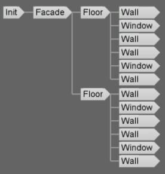

getTreeKey function
string getTreeKey()
Returns the unique TreeKey of the shape being derived, formatted as a string list. The TreeKey is a list of integer numbers denoting the path from the root shape to the shape being derived in the shape tree. Each number denotes the zero-based child index.
The TreeKey stays the same during derivation of the whole rule.
Examples
Simple example

CGA code
Init -->
print(getTreeKey() + " - Init")
center(xz)
extrude(10)
comp(f) { front: Facade }
Facade -->
print(getTreeKey() + " - Facade")
split(y) { '0.5 : Floor }*
Floor -->
print(getTreeKey() + " - Floor")
split(x) { '0.1 : Wall | '0.3 : Window | '0.1 : Wall }*
Wall -->
print(getTreeKey() + " - Wall")
Window -->
print(getTreeKey() + " - Window")
CGA console output
0; - Init 0;0; - Facade 0;0;0; - Floor 0;0;1; - Floor 0;0;0;0; - Wall 0;0;0;1; - Window 0;0;0;2; - Wall 0;0;0;3; - Wall 0;0;0;4; - Window 0;0;0;5; - Wall 0;0;1;0; - Wall 0;0;1;1; - Window 0;0;1;2; - Wall 0;0;1;3; - Wall 0;0;1;4; - Window 0;0;1;5; - Wall
The TreeKey stays the same during derivation of the whole rule
CGA code
ShapeA -->
print(getTreeKey())
split(x) { 2: ShapeB print(getTreeKey()) | 3: ShapeC print(getTreeKey()) }
CGA console output
0; 0; 0;